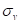
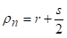
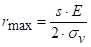
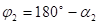
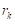
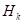
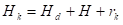

Конструкција и израда алата за савијање.
Увод
Na "Web site"-у је представљен материјал за конструкцију и израду алата за савијање двоструког угаоника.
Извор знања:
Конструкција алата за 4. разред машинске струке
Аутор: Џевад Хоџић.
"Свјетлост", ООУР Завод за уџбенике и наставна средства Сарајево 1988. год.
Здраво, ја сам Слободан Ивковић, из Приједора (Република Српска / Босна и Херцеговина).
Запослен сам као професор машинске групе предмета у ЈУ Машинска школа Приједор.
То је средња стручна школа.
Поставио бих питање: како спојити традиционална, квалитетна знања, прилагодити иста новим технологијама и ученицима модерног доба?
Мој одговор, скромно, искрено: прављењем "Web site"-ова, апликација итд., ако се слажете. Ако не, направите шта и како мислите да треба и тако предложите, надам се да ћете имати више среће од мене у овој држави, систему итд.
На дну имате контакт информације.
Ја много, много волим мог сина Алексеја Ивковића Цвијића и захвалан сам што те имам.
Довиђења!
Наставни материјал - теоријске основе:
Да би се уочиле деформације, издвојићемо из радног предмета елемент дужине x', који се налази на растојању x од левог ослонца.
Посматрајмо пресеке AB и A'B'. Ови пресеци ће остати равни и након оптерећења, само ће се заокренути један у односу на други за неки угао φ.
Одмах можемо уочити да ће се горња влакна A-A' skratiti, скратити, а доња B-B' издужити. Потпуно је логично да негде између ових влакана мора постојати влакно које се неће мењати и то влакно се назива неутрално влакно и чини неутралну површину.
Пресек неутралне површине са равни савијања даје неутралну или еластичну линију n-n. Према томе, влакна изнад неутралних оптерећена су на притисак, а влакна испод неутралних на истезање.
Неутрално влакно остаје непромењено те је:
Апсолутна и релативна деформација било којег влакна може се одредити на следећи начин. Посматрајмо влакно C-C' на растојању z од неутралне линије n-n. Пошто се то влакно налази у зони истезања оно ће се издужити за величину апсолутног издужења:
Релатвино издужење (деформација) износи:
tj.:
на крају добијамо израз:
За правилније одређивање напонско деформационих односа при савијању, уводи се појам редуцираног полупречника кривине неутралне линије .
Редукција се врши у односу на дебљину материјала s, па је: .
Због тога се у зависности од врсте и величине напона који се јављају при савијању као и величине редуцираног полупречника кривине, проблем савијања третира на два начина:
- Савијање у еластично - пластичном подручју,
- Чисто пластично савијање.
Савијање у еластично пластичном подручју спада у проблем линеарног напонског стања. До оваквог савијања долази у случају да су стварни напони, који се јављају у материјалу у интервалу од нула до вредности на граници чврстоће материјала, а редуцирани полупречник кривине се креће у границама 5 200.
Могу наступити три случаја:
- Попречни пресек носача до одређене висине је оптерећен еластично, а изнад те висине до спољних влакана пластично
- Носач је по читавом пресеку оптерећен еластично, с тим да максимална вредност напона не прелази напон на граници развлачења (течења) материјала 
- Напон је по целом пресеку константан и једнак је напону на граници развлачења
На следећој слици, разграничена су напонско-деформациона подручја, па први случај спада у подручје ep (еластично - пластично), други у подручје e (еластично), а трећи случај у подручје lp (линеарно-пластично). Подручје pp представља потпуно пластично или чисто пластично подручје.
Чисто пластично савијање се третира као проблем просторног напонског стања. До оваквог савијања долази у случају када су стварни напони у интервалу од вредности на граници чврстће материјала до вредности на граници прекида материјала (подручје од тачке М до тачке Z на дијаграму ), и када је < 5 тј. ако се савијање врши преко малих радијуса.
Претпоставимо да је потребно израдити предмет као на следећој слици:
Прво се подели готов предмет на елементарне дужине , те се може установити да се укупан профил савијеног предмета састоји из одређеног броја равних елементарних равних дужина и одређеног броја савијених елементарних дужина.
Нека издељени готов комад има n равних елементарних дужина и N савијених елементарних дужина. Потребно је сада одредити дужину L почетног материјала, односно развијену дужину материјала која ће нам обезбедити тачне димензије H и B.
Код n равних елемената није било деформације, те се дужина било којег материјала може узети у прорачун.
Међутим N савијених елемената има деформисана влакна, те ако би дужину тих елемената рачунали по спољној кривини добили би већу дужину од потребне (јер су спољна влакна издужена), па би морали вршити накнадно одсецање како би добили димензију B.
Исто тако ако би дужину савијених елемената одређивали по унутрашњим влакнима (који су сабијени, скраћени) укупна развијена дужина би била мања од потребне, те се не би могле постићи тражене димензије предмета. Намеће се закључак да је дужину савијених елемената потребно рачунати по оним влакнима која не трпе деформације, односно која се у току процеса савијања не деформишу. Та влакна се називају неутрална деформациона влакна и њихов радијус кривине савијања се означава са . Шта је сада ?
У претходном делу упознали смо се са неутралном линијом и није било потребно да се објашњава детаљније да при савијању предмета постоје две неутралне линије:
- неутрална деформациона линија, код које су деформације нула ( а напон постоји ),
- неутрална напонска линија, код које су напони нула ( а деформације постоје ).
Тз. да на профилу савијеног предмета могу постојати влакна која се не деформишу, али која имају одређено напонско стање, односно могу постојати влакна која немају напона, али која имају одређену деформацију. Дакле, ове две линије одступају једна од друге и ово се објашњава појавом пластичне хистерезе.
Одступање ових линија зависи од напонског стања и редуцираног полупречника кривине .
Нпр, полупречник кривине савијања напонске неутралне линије се у еластично пластичном подручју одређује по обрасцу: .
А код чисто пластичног савијања по обрасцу:
Полупречник кривине савијања неутралне деформационе линије се одређује из услова једнакости запремина материјала пре и након савијања. Тако се добија образац:
Где је ξ коефицијент који се одређује из табеле 38. на основу односа r/s.
Према томе дужина савијених елемената ће се одређивати као дужина кружног лука чији је полупречник .
Пошто се укупна дужина L почетног материјала састоји од равних и савијених елементарних дужина, онда се може написати образац за L у следећем облику:
Односно:
| r/s | 0.1 | 0.2 | 0.3 | 0.4 | 0.5 | 0.6 | 0.7 | 0.8 |
|---|---|---|---|---|---|---|---|---|
| ξ | 0.23 | 0.29 | 0.32 | 0.35 | 0.37 | 0.38 | 0.39 | 0.40 |
| r/s | 1.0 | 1.2 | 1.5 | 2.0 | 3.0 | 4.0 | 5.0 | 10.0 |
| ξ | 0.41 | 0.42 | 0.44 | 0.45 | 0.46 | 0.47 | 0.48 | 0.50 |
Постоје минимални радијус и максимални радијус  савијања.
савијања.
На слици испод показан је савијени предмет са означеним унутрашњим радијусом r, вањским радијусом R и радијусом неутралне линије .
Радијус предмета којег желимо добити не сме бити мањи од , јер ће се појавити пукотине на спољним влакнима, а исто тако предмет не може имати радијус већи од максималног , јер у том случају нема трајних деформација, па према томе нема ни савијања предмета.
Минимални радијус савијања се одређује на основу деформације:
Где је: ρ - радијус савијања било којег посматраног влакна.
Највеће деформације су на спољнем влакну и тамо се може очекивати прва пукотина те је:
Ако сматрамо да се савијање врши у чисто пластичном подручју онда је , па се деформација рачуна:
Означимо ли деформацију при којој настају пукотине на спољним влакнима са , а минимални радијус при којем настају ове деформације са , онда ће једначина попримити следећи облик:
Даљним рачунањем добија се:
Испистујући материјал научници су дали израз за минимални радијус према обрасцу: , где је c коефицијент који зависи од врсте материјала. Вредности за кофицијент c, дате су у табели 39.
| Материјал | c |
|---|---|
| Č.0210 | 1.5 |
| Č.0300 | 1.8 |
| Č.0400 | 2.0 |
| Č.0145 | 0.6 |
| Č.0146 | 0.5 |
| Č.0147 | 0.5 |
| Č.0147 | 0.5 |
| Cu | 0.25 |
| Cu 60 Zn | 0.40 |
| Cu 63 Zn | 0.40 |
| Cu 12 Zn | 0.30 |
| Cu 90 Zn | 1.0 |
| Cu Sn 2 | 1.2 |
| Cu Sn 6 | 0.6 |
| Ti 35 | 0.4 |
| Ti 35 | 0.5 |
Максимални радијус савијања се изводи на сличан начин, полазећи од основног обрасца за деформацију ε неког влакна полупречника ρ:
Узимајући да је и посматрајући спољне влакно код кога је ρ=R, добићемо једначину:
Пошто је , добиће се израз:
Да би у крајњим влакнима наступиле трајне пластичне деформације, напон мора бити најмање једнак (σ=) напону на граници течења материјала, при чему се добија полупречник код кога се јављају пластичне деформације, па је:

При чему се занемарује као мала величина у односу на r.
Према томе радијус r предмета којег савијамо мора бити у границама: < r <
Према томе, трајна деформација је једнака разлици пластичне и еластичне дефорамције (). Да би могли израдити предмет тачних димензија, морамо знати одредити величину тог еластичног исправљања радног комада. На следећој слици представљен је радни предмет у два положаја.
Карактериситке ,  , одговарају радном предмету у алату док на њега још делује сила, а карактеристике , , одговарају радном предмету након престанка дејства силе, односно након растерећења. Како онда одредити , односно како одредити дименије алата, ако су познате димензије предмета који се жели добити?
, одговарају радном предмету у алату док на њега још делује сила, а карактеристике , , одговарају радном предмету након престанка дејства силе, односно након растерећења. Како онда одредити , односно како одредити дименије алата, ако су познате димензије предмета који се жели добити?
Знамо да је: , где су:
- угао савијања готовог предмета,
- угао савијања који треба да има алат (непознато).
Онда је:
Да би се могао одредити повратни угао, уводи се фактор еластичног исправљања и означава се са k, где је:
Како је:
 и
Онда је:
и
Те се добија израз за повратни угао:
Фактор k зависи од врсте материјала и односа r/s и дат је на слици:

Аналитички k се може израчунати по обрасцу:
При чему мормо користити везу полупречника неутралних линија пре и после растерећења радног предмета:
Где је:
Овде ћемо силе савијања одредити само за неке основне облике.
Сила тискача F може се разложити на две паралелне компоненте F/2, које делују на удаљености l од центра радијуса калупа .
Као што се запажа процес је симетричан, те се може посматрати само једна страна двоструког угаоника. На слици је представљена шема сила које делују у процесу савијања.
Из шеме сила можемо уочити да је сила F/2 узрок појави сила на калупу. У посматраном тренутку процеса, сила F/2 делује у тачки B лима и условљава појаву реактивне силе на месту додира лима и калупа у тачки А. У тачки B сила F/2 заправо се манифестује као сила .
Сила савијања одређује се на основу услова једнакости спољашњег момента савијања и момента унутрашњих сила , односно:
Сила се одређује из услова статичке равнотеже растављањем сила на вертикалне и хоризонталне компоненте као на слици изнад те се добије:.
Сада је потребно одредити крак силе x, а он се одређује из услова једнакости дужине l и пројектованих дужина , s, x, на хоризонталну осу:
Пошто је у основном положају алата дужина , те заменом ове вредности у претходну једначину добијамо крак силе:
На основу овога, условна једначина за једнакост момента би била: 
Те се из ове једначине сила савијања двоструког угаоника може изразити: . Претходни образац важи за савијање у отвореном калупу.
За савијање у калупу са избацивачима, сила се мора повећати за величину силе избацивања. Обично се у случају савијања у калупу са избацивачима, сила савијања одређује по обрасцу:
Свакако треба поменути да се унутрашњи моменти одређују на основу напонско-дефорамционих односа материјала и зависи да ли се савијање врши у еластично-пластичном подручју или у чисто пластичном подручју. Зато постоје два обрасца за унутрашње моменте и то:
 за еластично - пластично подручје
за еластично - пластично подручје- за чисто пластично подручје
Где је корекциони фактор очвршћавања.
Процес савијања једноструког угаоника је потпуно идентичан процесу савијања двоструког угаоника, те је сила потребна за савијање једне стране два пута мања од силе код двоструког угаоника, тј:
Код слободног савијања "V" профила сила савијања се одређује на основу једнакости спољашњих и унутрашњих момената, тј:
Такође због симетричности процеса можемо посматрати само једну страну, односно један ослонац, уз претходно разлагање силе тискача F на две паралелне компоненте F/2, од којих једна делује у тачки B, а друга у тачки C. Поново ћемо из услова статичке равнотеже одредити отпор ослонца тако да ћемо силе разложити на компоненте у хоризонталном и вертикалном правцу. Тако добијамо:
Крак савијања x добијамо из услова:
Одакле следи:
Где су:
- растојање између центара заобљења калупа,
- φ угао савијања ()
- дужина у основном положају алата
Заменом вредности за и x у условну једначину момената и сређивањем добијамо израз за потребну силу савијања у облику: . Где је M момент унтрашњих сила.
На слици изнад представљено је шематски савијање у калупу. Сила се доста тешко аналитички одређује, јер радни комад у току савијања два пута поприма угао калупа, где су приказане четири фазе.
- тискач лагано притискује лим савијајући његов средишњи део према доле. При томе су тачке А и А' места у којима се материјал ослања о калуп.
- материјал се ослања о калуп у тачкама А и B. Када је већ тискач савио лим тако да он први пу поприма угао калупа. Након тога сила расте, тискач се помера и даље вертикално
- материјал поприма угао тискача и радијус тискача, при чему кракови материјала належу на бочне стране тискача
- завршава се савијање када материјал поново поприма (по други пут) угао калупа и тиме добија коначне димензије
Сила се одређује на следећи начин:
Пошто је момент савијања , онда је потребно одредити и x, и тако готово на исти начин као и код слободног савијања, одредити силу савијања F.
Вредност реакције је , а крак силе се може одредити по обрасцу те је , одакле је:
Са довољном тачношћу може се у овој формули радијус неутралне линије одређивати по обрасцу .
Кружно савијање које је шематски представљено на слици користи се веома често у машинству. Сила савијања најлакше се може одредити на основу деформационог рада код кружног савијања.
Деформациони рад је:
Па је сила за кружно савијање дата обрасцем:
Где су:
- M - момент савијања,
- φ - угао савијања,
- - полупречник кривине неутралне линије напона,
- r - унутрашњи полупречник радног комада,
- s - дебљина лима (материјала).
Радијус тискача
Ако је задовољен услов да је радијус готовог комада у интервалу: < r < , онда се радијус тискача одређује по обрасцу: , где је: фактор еластичног исправљања.
Радијус калупа
Одређује се зависно од висине радног комада h и дебљине лима s према табели 40.
Укупна висина калупа 
За комаде већих висина: 
 висина држача (избацивача) зависна од дебљине лима и то:
висина држача (избацивача) зависна од дебљине лима и то:
| s | <2 | 2 до 4 | 4 до 6 | 6 до 8 |
|---|---|---|---|---|
|
30 до 40 | 40 до 50 | 50 до 60 | 60 до 75 |
За радне комаде мањих висина: 
Где је t дато зависно од t и то:
| s | <2 | 2 до 4 | 4 до 6 | 6 до 8 |
|---|---|---|---|---|
| t | 4 | 7 | 20 | 15 |
 висина равног дела калупа дата је у табели 40.
висина равног дела калупа дата је у табели 40.
.
Зазор f (зрачност)
Зазор између тискача и калупа се одређује по обрасцу: 
Где је коефицијент зрачности који зависи од висине радног комада h и дебљине лима s и дат је у табели 41.
 Табела 41. Подаци за .
Табела 41. Подаци за .
Ширина тискача и калупа
Ако се захтева да радни комад има тачну унтрашњу ширину c, онда треба да је:
ако се захтева да радни комад има тачну вањску димензију e онда треба да је:


- Ако се једним алатом могу правити предмети различитих профила и димензија, онда се такав алат назива универзалним
- За посебне облике савијања постоје специјални алати.
- Почетни облик материјала (који се претходно одсече на пресама или маказама), се ставља на прву позицију алата, где се у првој фази тискачем 1 и калупом 2, савију само крајеви радног комада.
- Потом се радни комад пребацује на другу позицију, где се тискачем 3 и калупом 4 постиже коритаст облик комада (II фаза)
- Затим се у III фази тискачем 5 и калупом 6 добија коначан цилиндричан облик комада. Ради добијања што правилнијег круга цилиндра, у радни комад се ставља уметак 7.
Као што се види, калиуп на својим странама има уреазне различите облике који се могу користити за савијање радних комада. За сваки од ових пблика мора постојати тискач, који такође по облику и димензијама одговара одређеном профилу.
На слици изнад представљен је један трофазни специјални алат за израду цилиндричних предмета, цеви пречника 20 до 60 mm.
Треба напоменути да се померање радног комада са једне на другу позицију, врши ручно и да се процес одвија у једном следу, тако што се при пребацивању радног комада на другу позицију са прве, на прву позицију поставља нови радни комад, а кад се поставља радни комад са друге на трећу позицију, истовремено се ручно помера и радни комад са прве на другу позицију, а на прву позицију се поставља нови радни комад. Тз дасе истовремено раде у појединим фазама 3 комада.
Кућишта ових алата су стандардизована од JUS K.H2.050 до JUS K.H2.092.